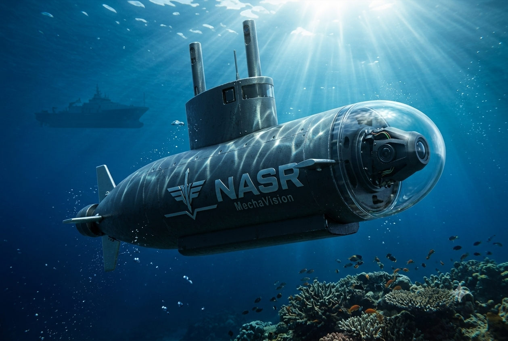
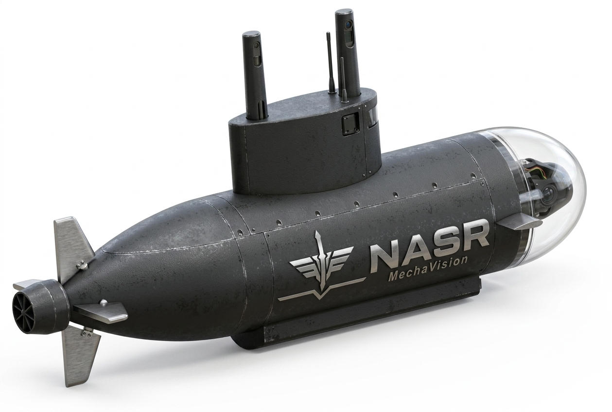
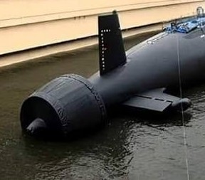
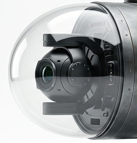
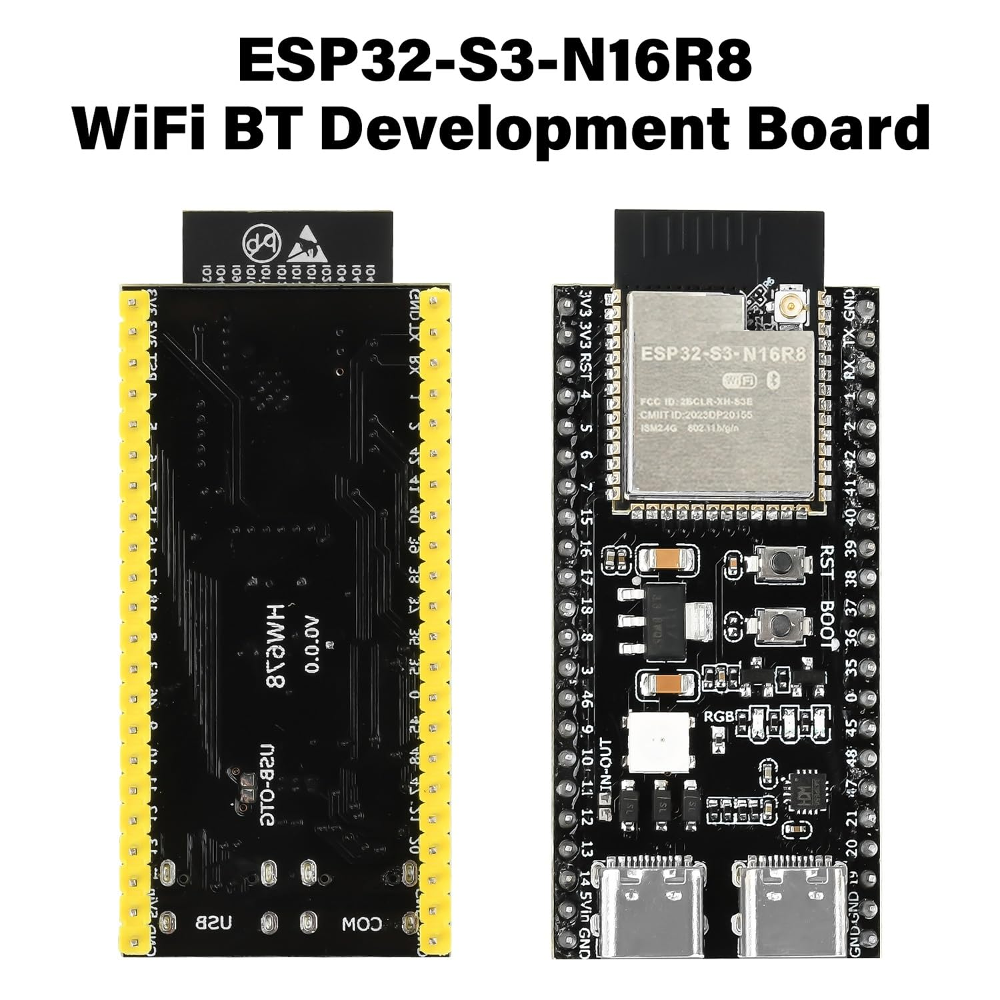
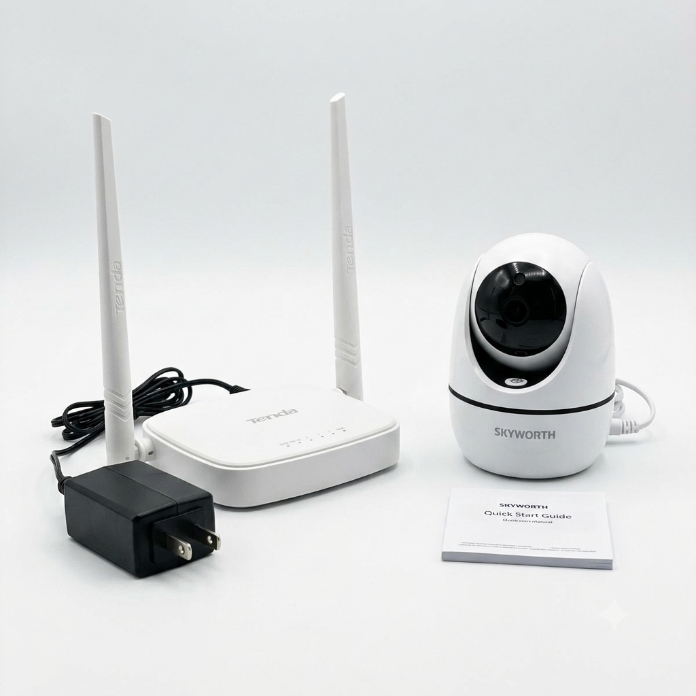
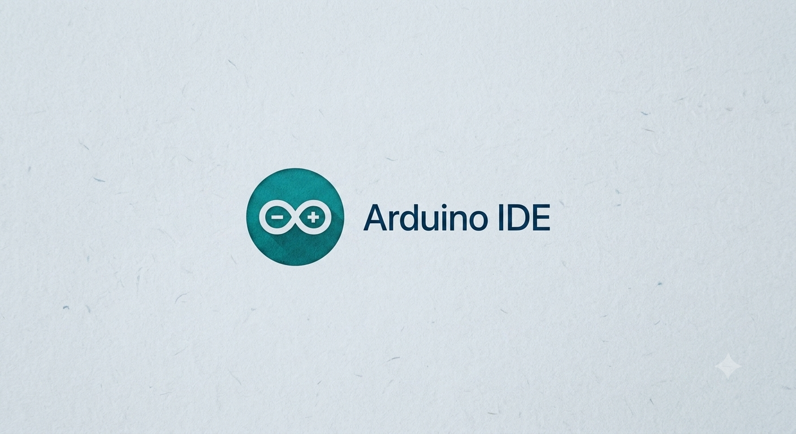
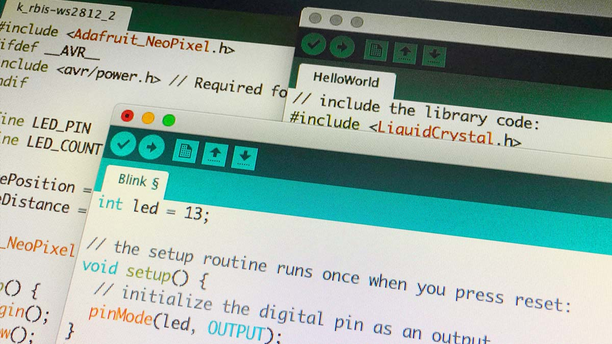
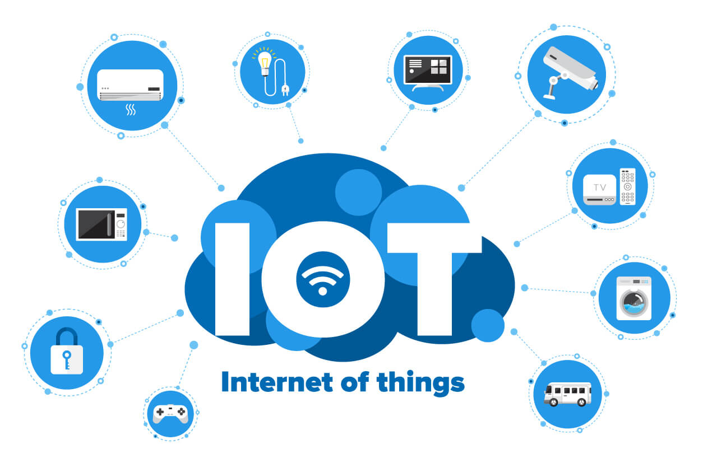

Mecha Vision Team
Submarine Live Monitoring
An underwater vehicle engineered for real-time visual inspection, environmental sensing, and remote monitoring in marine environments.

Module 01 · Overview
Introduction
The Intelligent Live Monitoring Submarine is a compact, remotely operated underwater vehicle designed to capture live video, track depth and orientation, and relay telemetry to a surface control station in real time. Built as our graduation project, it combines mechanical design, embedded electronics, and custom software into a single integrated platform.
The system targets applications in underwater inspection, environmental monitoring, and search support — areas where continuous, intelligent observation below the surface is difficult to achieve with traditional tools. This page walks through how the mechanical, electronic, and software layers come together to make that possible.

Module 02 · Structure
Mechanical Design
The hull was modeled to balance buoyancy, stability, and access to internal components. A sealed pressure housing protects the electronics bay, while modular thruster mounts and a reinforced frame allow the vehicle to maneuver precisely at depth. Every part was prototyped, tested for water resistance, and refined across several design iterations before final assembly.



Module 03 · Systems
Electronics System
The electronics stack is built around a central control board that manages power distribution, motor drivers, and sensor input. Depth, orientation, and temperature sensors feed live data to the onboard processor, which is relayed to the surface through a tethered communication line for low-latency, reliable monitoring.



Module 04 · Intelligence
Software System
The software layer streams live video and telemetry to a custom monitoring dashboard, where depth, heading, and sensor readings are visualized in real time. An onboard vision pipeline assists with object detection underwater, while the control interface lets an operator adjust course, log readings, and review recorded footage after each dive.



Module 05 · Demonstration
Project Demonstration
Watch the submarine in action — dive tests, live monitoring footage, and a walkthrough of the control dashboard.
Local recording of a full submersion and recovery cycle.
Screen-capture walkthrough of the real-time telemetry interface.